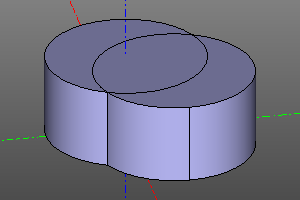
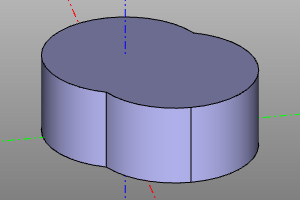

Прочие операции.
В этом разделе перечислены операции не подходящие ни к одному другому разделу.
unify
Данная операция упрощает геометрическое представление объекта, путём удаления лишних рёбер и объединения гранией.
Может выполняться над двумерными и трёхмерными объектами.
Сигнатура:
unify(shp)
Пример:
unify(cylinder(r=10, h=10) + cylinder(r=10, h=10).move(5,5))
| До | После |
|---|---|
|  |  |